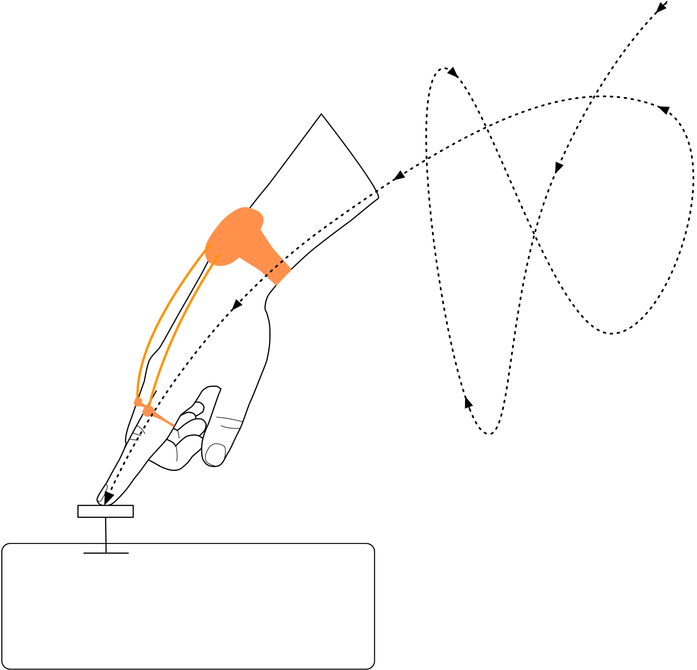

EXPRESSIVE COMPUTER INTERACTIONS & CREATIVE Technologies LAB
Transforming the experience people have with new technologies
Dr Cameron Steer (He/Him)
cameron.steer@uwe.ac.uk
Shape-changing displays and controllers

Deformable textures and non-ridded input surfaces

Metaphors and design principles for physical interfaces.
Edge Computing: Challenges & Opportunities

Mohammad Hosseinabady, PhD
Luke Child (he/him)*
*PhD student - Associate Lecturer - CT Lab Infiltrator (luke.child@uwe.ac.uk)
PhD researcher in the affordances of sonic interaction in designing accessible navigation and narrative experiences in virtual video game environments. Supervisied by Dr Natanya Ford and Dr Tom Mitchell

- Developing sonic interaction systems for accessible virtual narrative and navigation
- Applying inclusive design processes to sonic interaction and game design
- Communicating research in accessible and inclusive formats
- My Staff Profile
- My Website
Rapid Prototyping of Accessible Digital Musical Instruments in Collaboration with Disabled Musicians
- Speculative and Collaborative Design Workshops with Disabled Musicians, Designers and Academics
- The Use of Generative AI Tools in Design Ideation
- Co-design of Bespoke Accessible Digital Musical Instruments
Hugh Aynsley, PhD Candidate.
Dr Nikolaos Ersotelos
BSc, MSc, PhD, FHEA, MBCS
Senior Lecturer in Games Technology,
Programme Leader (MSc) Commercial Games Development
School of Computing and Creative Technologies
Bio: Dr Nikolaos Ersotelos currently holds a Senior Lecturer in Games Technology position and is the programme leader for the MSc Commercial Games Development course. He is also a Fellow of the Higher Education Academy (FHEA) and a British Computer Society (BCS) member with more than 15 years of experience in teaching and research in computing vision, web development and blockchain technology. He holds a BSc in Music Technology, an MSc (Dist.) in Media Production and Distribution and a PhD in Computer Science. He has participated in 9 research projects funded by the European Commission, the Ministry of Defence and Innovative UK.
Research interests: computing vision; games technology; web/software development; blockchain;
Sample of my research work
Visual Health Project: https://youtu.be/ZKd3ELRNcgA
Rod Dickinson

Artist working with programming and emerging technology to explore and research feedback and behaviour.
Many artworks are collaborations with other writers, artists and technologists, including Tom McCarthy, Sarah Selby, Steve Ruston, Jamie Lamb and Nathan Semertzidis.
https://www.roddickinson.net/Walk this way!
By Annabel McCourt and Adrian Riley in collaboration with Rod Dickinson and Sarah Selby

Walk This Way is an interactive public art installation that combines artificial intelligence with surveillance technologies.
Passersby have the opportunity to embody the essence of a historical Grimsby character by striking various poses. Utilising pose detection technology, participants can unveil the narrative of their character, exploring its history through dynamic movements and actions.
Professor of Audio and Music Interation
Music HCI / Sonification

Ingredients
Digital Musical Instruments
Inside-Out Interations
Outside In-teractions
Outside In-teractions
Camera Noise
Exploring Visual to Audio Synthesis
Taking Inspiration from Analogue Optical Sound
https://en.wikipedia.org/wiki/Optical_soundJasmine Butt, PhD Candidate.
Study 1: Insights from the darkroom
Capturing Processes and Perspectives
Jasmine Butt, PhD Candidate.
Study 2: Tone Lamp Workshops
Interactions with a camera-input musical instrument
Jasmine Butt, PhD Candidate.
Xingzhi [GiGi] ZHENG
 https://people.uwe.ac.uk/Person/GigiZheng
https://people.uwe.ac.uk/Person/GigiZheng
- Mr Xingzhi ZHENG [ GiGi / CHENG Heng Chi / 鄭行之 ] is a multidisciplinary lecturer, designer and developer of Graphic, Apps & Games.
- He is working as a lecturer in Digital Media at the Computer Science and Creative Technology Department, University of the West of England [2023~].
- Since graduating in 2010, Mr. Xingzhi ZHENG provided services for several design agencies worldwide. Through agencies, he provided design and technical services for clients, including The Palace Museum, Kimberley Clark Professional, Sino United Publishing, etc.
- He completed an MA in Games Design at the London College of Communication [2019~2021].
Current Research Project
- Lead Developer for Focus but… Where a Web-Based Hidden Object Game powered by Phaser.io Game Engine and Tensorflow Face-Landmark Detection Framework.
- i-click-you , A dual-player online game for strengthing intimate relationships by “Kissing and Spanking your friends online”.
- Book Designer for the personal project Jisi Zheng’s Lotus (A personal editorial project).
Nathan Renney
 https://people.uwe.ac.uk/Person/NathanRenney
https://people.uwe.ac.uk/Person/NathanRenney
- End-user development
- Meta-design
- Embedded systems
- Programming languages
Expressing complex rhythms
[ a c e ] a a [ a c e ] a a
-|- a c a c
| : | g [ g c ] g [ g c ] g [ g c ] g
ExpressivityEnd-user Development

Bruce McLaren
Benedict R. Gaster (he/him)*
*Associate Professor in Physcial Computing
- slow technology
- craft to explore life long learning
- analog as a digital metaphor
- meta-design


ECI & CT Lab
wide varerity of research interests
weekly meeting in X-block (soon Foundry)
looking for others to collaborate


Demos and Biscuits
please stay and chat